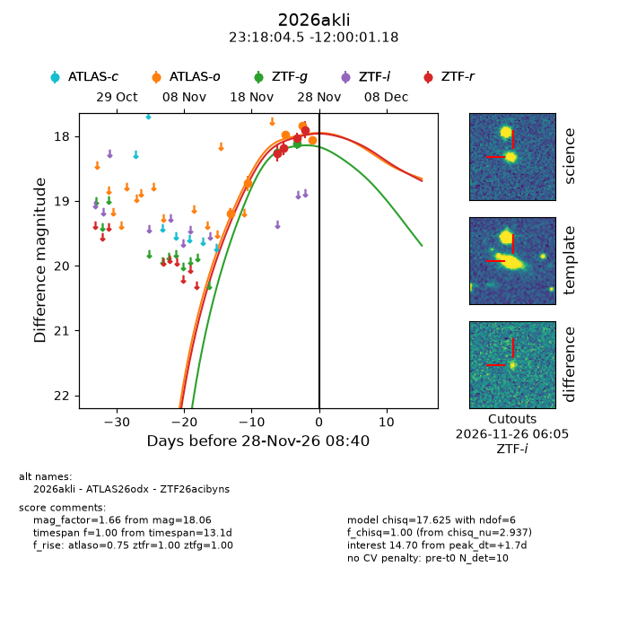
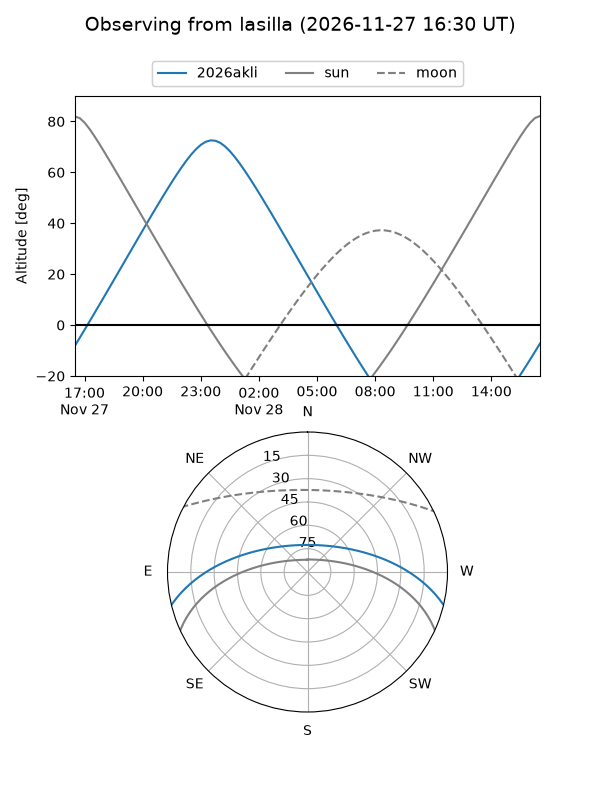
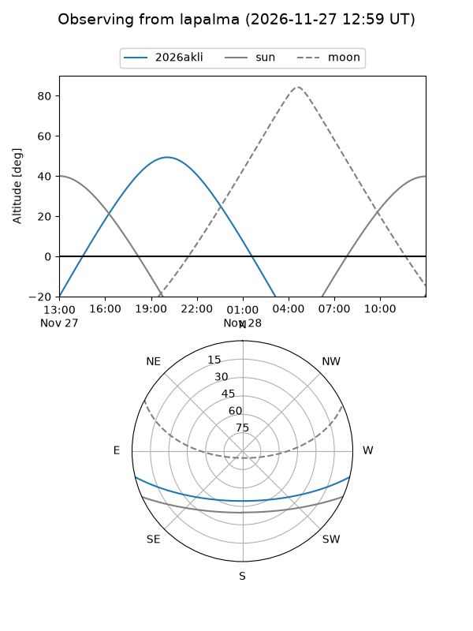
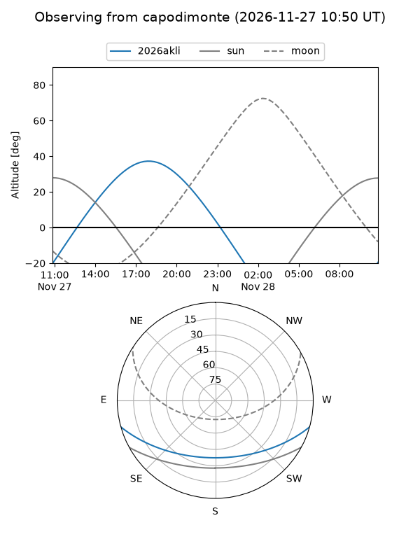
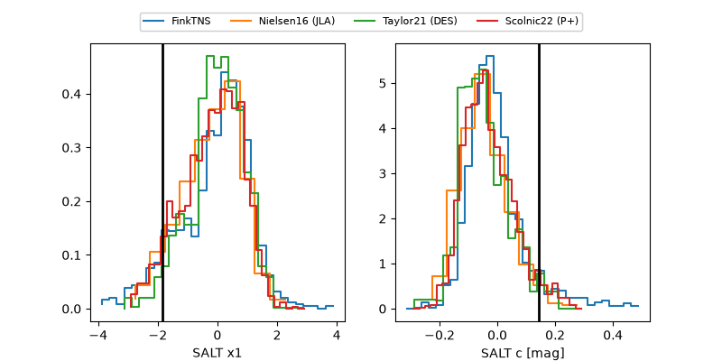

2026akli
Target 2026akli at 2026-11-28 08:42
Aliases and brokers:
FINK-ZTF: ztf.fink-portal.org/ZTF26acibyns
Lasair-ZTF: lasair-ztf.lsst.ac.uk/objects/ZTF26acibyns
ALeRCE-ZTF: alerce.online/object/ZTF26acibyns
YSE-PZ: ziggy.ucolick.org/yse/transient_detail/2026akli
TNS name: wis-tns.org/object/2026akli
Direct TNS query: direct search
alt names
ZTF26acibyns (ztf,fink_ztf)
2026akli (tns,yse)
ATLAS26odx (atlas)
Coordinates:
equatorial (ra, dec) = 349.5187,-12.00033
equatorial (HMS+DMS) = 23:18:04.50,-12:00:01.18
galactic (l, b) = (63.0126,-63.39369)
Flags:
peak dt: +1.7
Photometry:
last atlaso=18.06, ztfg=18.11, ztfr=17.90
5 atlaso, 2 ztfg, 4 ztfr detections
Lightcurve

Visibility



Additional plots
